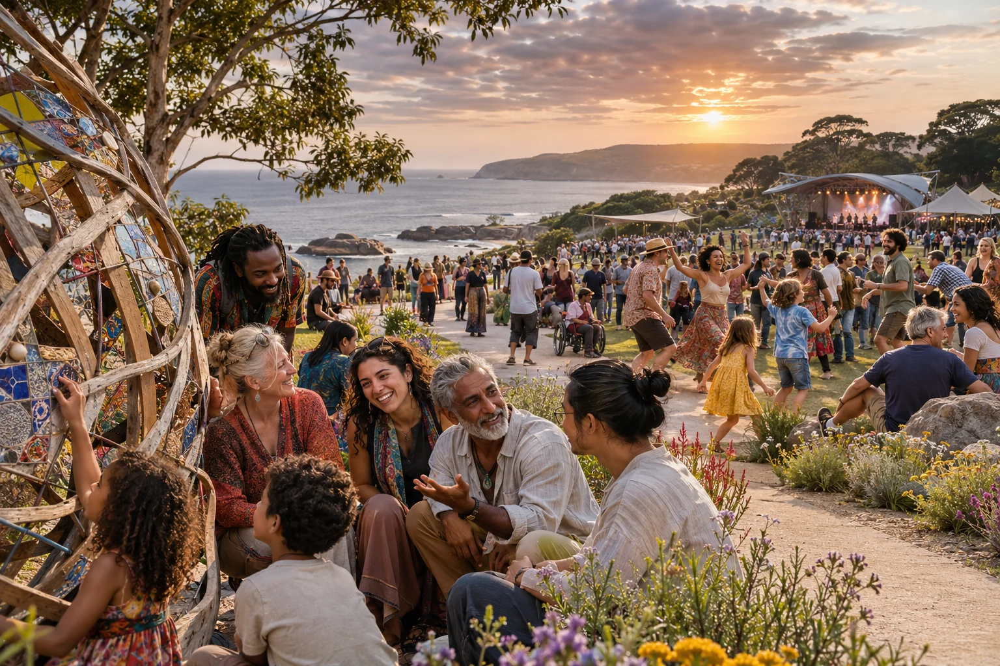

A 24/7 civic establishment
A clear place
for the idea.
The visual, editorial and publishing conventions behind the civic establishment site.
Working exploration · Brisbane · 7 November 2026
An imagined setting for the proposed 2035 global festival. AI-generated concept image.
Image credit ↗A recognisable publishing pattern
Give the idea a clear visual home.
This site follows the established Aura project pattern: distinct photographic heroes, accessible reading, visible sources, full navigation, linked repositories and the Strange But True Public Source Licence.
Its own identity uses deep ink and cobalt with warm amber, cream and mint. The visual purpose is a welcoming civic place with practical technical capability and room for different lives.
#091429
#3864ed
#f6ba54
#f3f0e7
#8cdbc1
Words and evidence
Explain the task before adding the detail.
| Convention | Application |
|---|---|
| Australian context | Australian English, AUD, metric units and the relevant public institutions. |
| An invitational voice | Describe useful possibilities, actual responsibilities and a result people can examine. |
| Clear evidence | Keep historical facts, authored directions, scenario assumptions and operating arrangements distinguishable. |
| Whole-person purpose | Learning, joy, care, agency, work and contribution can coexist across different personal paths. |
| Direct language | Use clear sentences, explain an initialism on first use and preserve uncertainty where it matters. |
Images that mean what they show
Real places and imagined possibilities.
Every public page has a distinct hero. Photographs identify their real subject, creator and licence. Generated images describe imagined settings and keep their source prompts and tool metadata.
Images retain their native proportions in inline figures. Heroes adapt to the screen through a display crop. Captions stay outside the image so the evidence is readable.
Keyboard focus, reduced motion, mobile reading, printable guides and visible calculator units are part of the same visual system.
Inspect the image register →
A maintainable public site
Keep content, formulas and discovery in step.
The page generator supplies complete navigation, previous and next routes, canonical addresses and both human and machine-readable sitemaps. The formulas live in a separate module with arithmetic checks.
The repository includes favicon sizes, a web manifest, source data, image provenance, AI transparency notes, robots.txt and llms.txt. A repository-path robots file points to origin-wide policy rather than claiming control of the whole GitHub Pages domain.